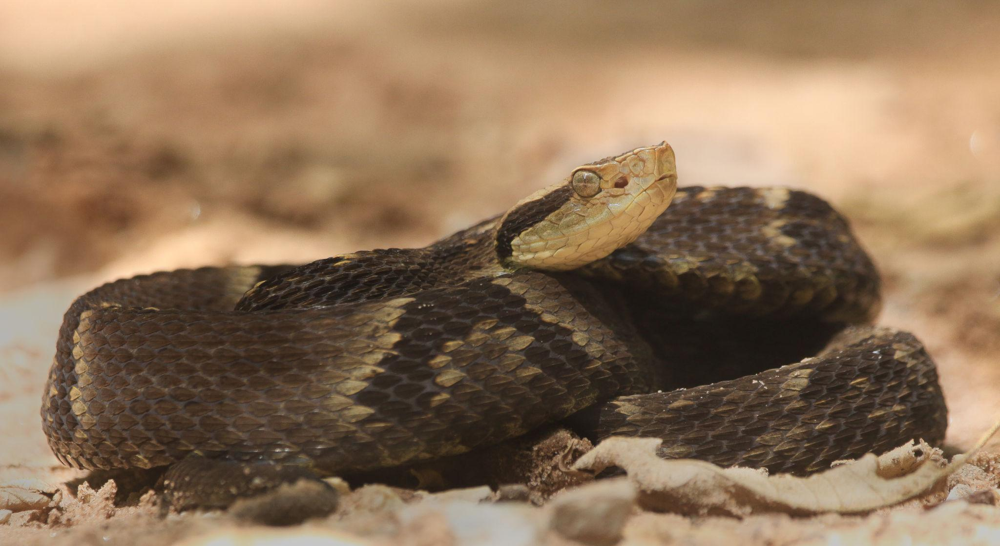
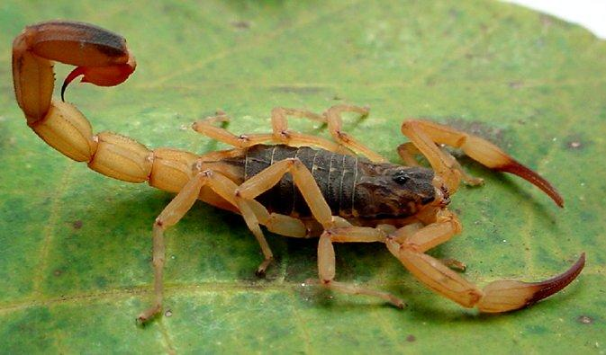
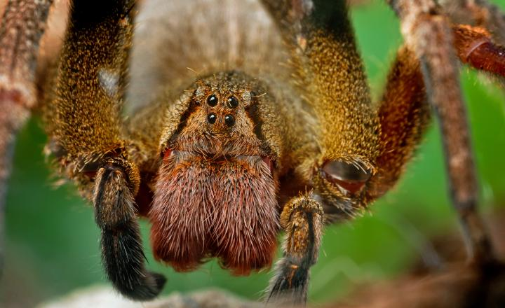
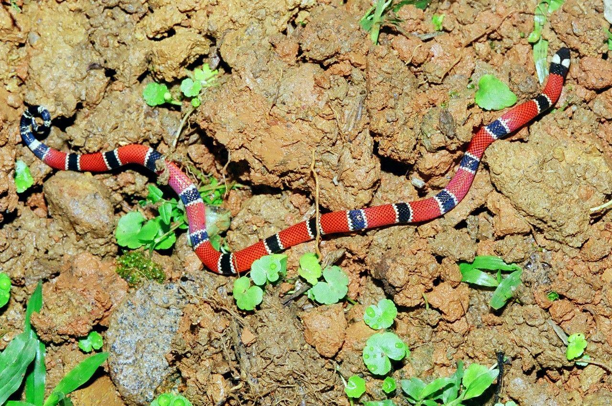
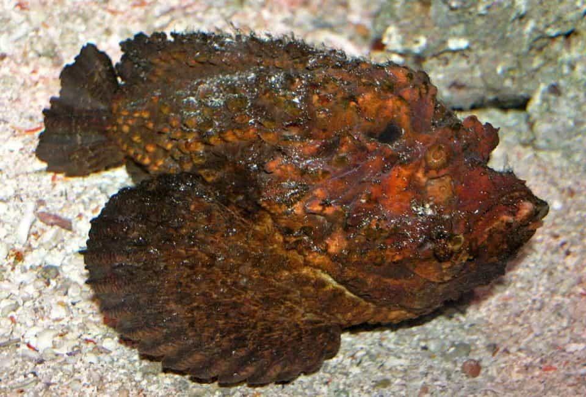
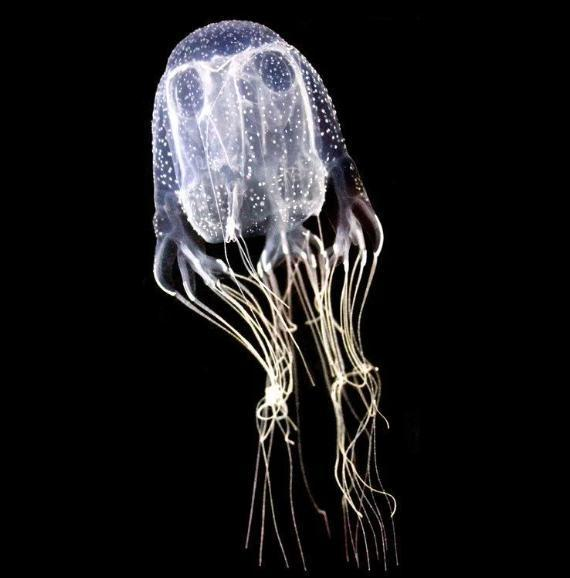
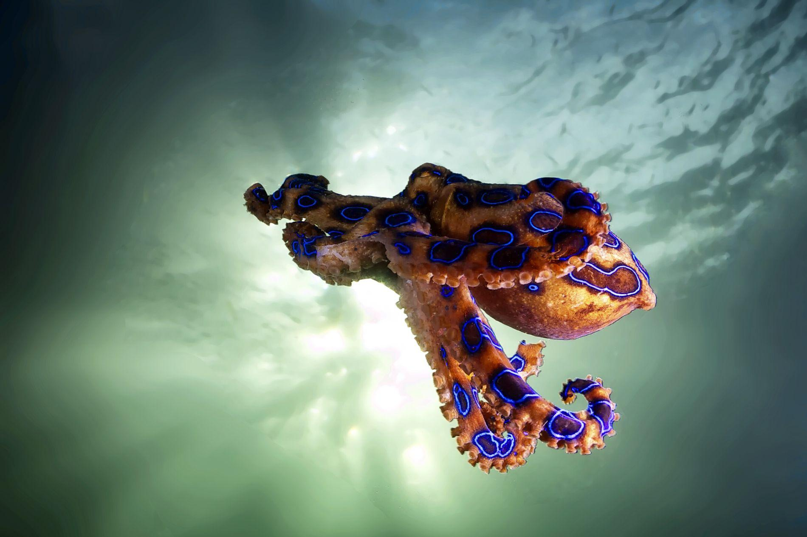
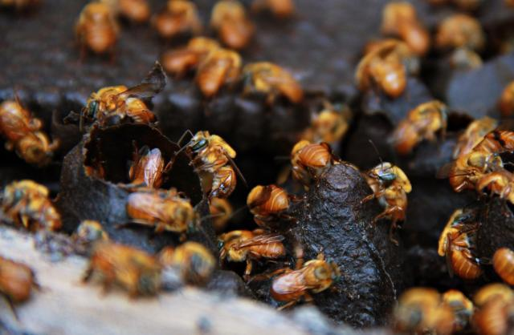
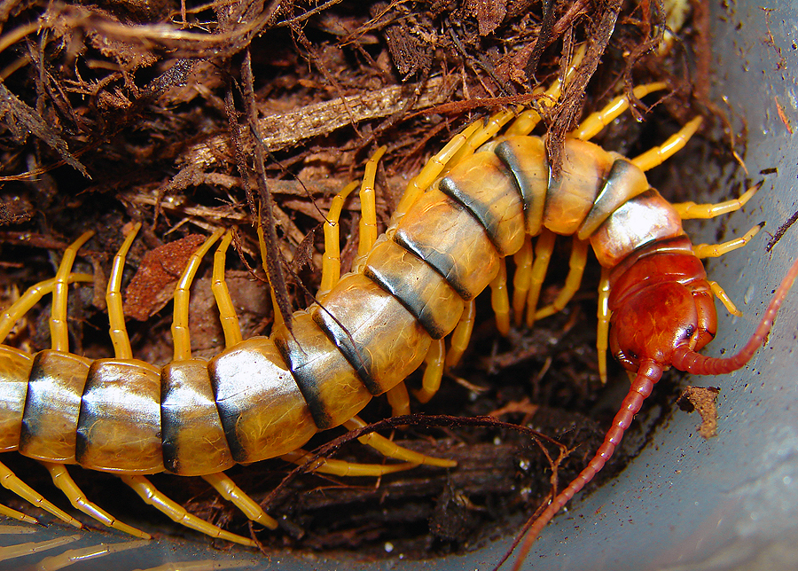
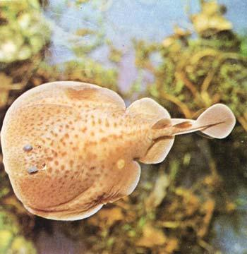

A Jararaca é uma das cobras peçonhentas mais conhecidas do Brasil.Sua peçonha é inoculada pelas presas e pode causar dor intensa, sangramentos e necrose.Ela vive em matas, plantações e locais úmidos, sendo muito temida em áreas rurais.
O Escorpião-amarelo possui um veneno muito perigoso localizado no ferrão da cauda.Sua picada provoca dor forte, suor excessivo e alterações nos batimentos cardíacos.É encontrado principalmente em cidades, escondido em entulhos, ralos e locais escuros.


A Aranha-armadeira é considerada uma das aranhas mais venenosas do mundo.Ela injeta peçonha pelas quelíceras, causando dor intensa, inchaço e câimbras.Costuma aparecer em jardins, sapatos e até em cachos de banana.
A Cobra-coral possui cores vibrantes que servem de alerta para predadores.Seu veneno neurotóxico age no sistema nervoso e pode causar paralisia respiratória.Apesar de pequena, é extremamente perigosa quando se sente ameaçada.


O Peixe-pedra é um animal marinho camuflado entre pedras e corais.Seus espinhos dorsais liberam uma peçonha que causa dores insuportáveis e inchaço.É considerado um dos peixes mais venenosos do planeta.
A Água-viva-caixa possui tentáculos cheios de toxinas muito potentes.O contato com sua peçonha pode provocar queimaduras graves e parada cardíaca.Ela vive em mares tropicais e representa grande perigo para banhistas.


O Polvo-de-anéis-azuis é pequeno, mas extremamente perigoso.Sua saliva contém toxinas capazes de causar paralisia muscular e falta de ar.Quando ameaçado, seus anéis azuis ficam mais brilhantes como sinal de defesa.
A Abelha-africanizada é conhecida pelo comportamento agressivo em enxames.Seu ferrão injeta veneno que causa dor, inchaço e reações alérgicas graves.Ataques em grupo podem ser perigosos para humanos e outros animais.


A Lacraia utiliza forcípulas venenosas para capturar suas presas.Sua picada provoca dor intensa, vermelhidão e sensação de queimadura.Ela vive em locais úmidos, como jardins, troncos e debaixo de pedras.
A Raia possui um ferrão com veneno localizado na cauda.O acidente causa dores muito fortes, cortes e risco de infecções.Esse animal costuma ficar escondido na areia de rios e praias rasas.
